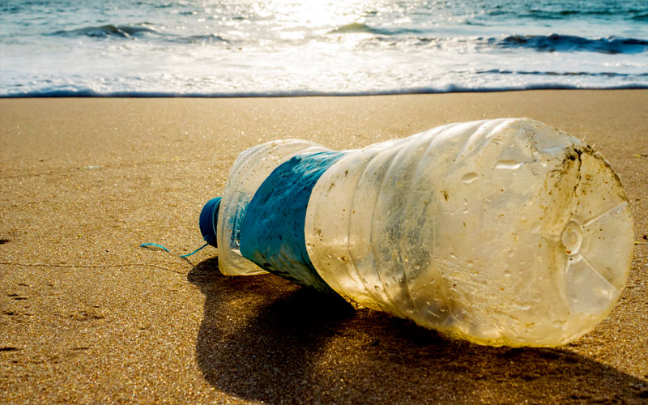
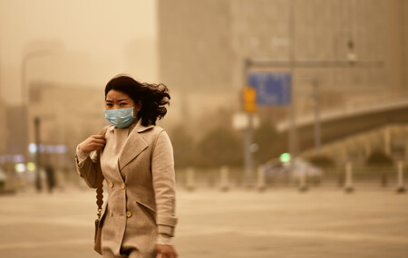

LA GRAVEDAD DE LA CONTAMINACION | ||||||
|---|---|---|---|---|---|---|
Los agentes contaminantes pueden ser físicos, químicos o biológicos y perjudican medios como el agua, el suelo o el aire cuando se presentan en concentraciones muy elevadas. Estos compuestos alternan las condiciones de los organismos que habitan en ellos, generando problemas de salud o de seguridad, malestar e incluso la muerte. Esto ocurre con la contaminación atmosférica. El aire que respiramos está compuesto, de manera natural, por nitrógeno, oxígeno y otros gases que producen el efecto invernadero, como el dióxido de carbono CC0 Public Domain. Sin embargo, con la aparición de las fábricas y de vehículos que funcionan con motores de combustión, se han aumentado las emisiones de monóxido de carbono y los óxidos de azufre por la quema de energías fósiles como la gasolina (que se deriva del petróleo), el gas o el carbón. |
Sin embargo, con la aparición de las fábricas y de vehículos que funcionan con motores de combustión, se han aumentado las emisiones de monóxido de carbono y los óxidos de azufre por la quema de energías fósiles como la gasolina (que se deriva del petróleo), el gas o el carbón. |
 | EFECTO INVERNADERO El efecto invernadero es un fenómeno natural gracias al cual la radiación social traspasa la capa protectora de la Tierra y la captura en forma de calor. |
 | ||
Contaminación natural. Los humanos no somos los únicos seres que generamos contaminación. Algunas algas que crecen en los embalses o represas liberan toxinas que contaminan el agua. De igual forma, los volcanes son una fuente de contaminación natural. Cuando un volcán entra en erupción, en la atmósfera ingresan cenizas y altas concentraciones de azufre, hierro y otros minerales que afectan el medio ambiente. Recorrimos diferentes partes de Medellín y les preguntamos a las personas que es para ellos la contaminación y aquí están sus respuestas. |
causada por fenómenos como los incendios forestales, las erupciones volcánicas, los tsunamis o los terremotos. Artificial: provocada por la actividad del ser humano (efectos contaminantes: actividad industrial, productos químicos, etc.).
|
El agua de los ríos contaminados que se use en los riegos de los cultivos, daña las frutas y verduras que nos sirven de alimento. |
|